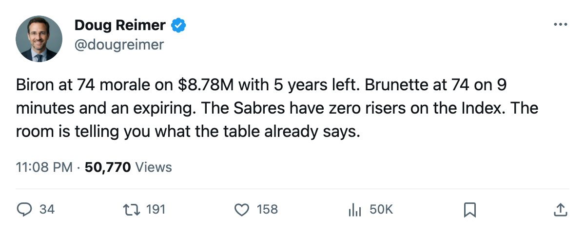
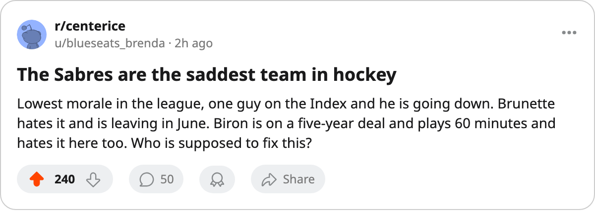

87.0 Club Morale, $8.78M for a Man at 74, 1 Faller: The Buffalo Room From the Morale Scale Up
The Sabres have the lowest club average of any team. Martin Biron is the most expensive unhappy player in hockey. The Development Index has them going nowhere.
 Doug ReimerAnalytics editor, ex-video coach · The Slot Report
Doug ReimerAnalytics editor, ex-video coach · The Slot Report
 Buffalo Sabres has the lowest club morale in the league at 87.0. The next-worst is
Buffalo Sabres has the lowest club morale in the league at 87.0. The next-worst is  Carolina Hurricanes at 87.2, then
Carolina Hurricanes at 87.2, then  Atlanta Thrashers at 87.8. Three Sabres sit in the league's bottom 15 by individual morale: goaltender
Atlanta Thrashers at 87.8. Three Sabres sit in the league's bottom 15 by individual morale: goaltender  Martin Biron86 at 74, backup Francois Anderson76 at 74, and winger
Martin Biron86 at 74, backup Francois Anderson76 at 74, and winger  Andrew Brunette73 at 74.
Andrew Brunette73 at 74.
The question the Morale Scale does not answer is whether unhappiness costs points. The method here is simpler: cross-reference the three unhappy players' contracts, their Development Index status, and the team's position. What comes back is a club paying $57.39M for 12 points ($4.78M per point), sitting 12th in the East at 12 points in 13 games, with one player on the Index (falling) and none rising.
The Biron contract
Martin Biron is rated 87 in the Book. He is on $8.78M with 5 years remaining on his deal. His morale is 74, tied for the lowest in hockey. He has started 10 of 13 games, a 77% share of Buffalo's workload.
That $8.78M is the highest goaltender salary on the contract-year class and the morale tables both. The next-highest is  Curtis Joseph91 at $8.00M, a 38-year-old with 4 starts in 14 games. Biron's base rating in the Book is 90. His current overall reads 87, which is a 3-point drop from base. He does not appear on the published faller list (which starts at -4), but the gap between his base and his overall is visible in the Bureau's form term.
Curtis Joseph91 at $8.00M, a 38-year-old with 4 starts in 14 games. Biron's base rating in the Book is 90. His current overall reads 87, which is a 3-point drop from base. He does not appear on the published faller list (which starts at -4), but the gap between his base and his overall is visible in the Bureau's form term.
The Index: one faller, zero risers
The Bureau's Development Index lists exactly one Sabre:  Stanislav Neckar65 at -4. He is a defenseman rated 67 on an overall that started at 73. He has played 7 games and logged 90 minutes. The faller list is public and starts at -4, which is where Neckar sits.
Stanislav Neckar65 at -4. He is a defenseman rated 67 on an overall that started at 73. He has played 7 games and logged 90 minutes. The faller list is public and starts at -4, which is where Neckar sits.
No Sabre appears on the riser side. For comparison,  Toronto Maple Leafs has 5 players on the riser list:
Toronto Maple Leafs has 5 players on the riser list:  Marian Gaborik99 at +11,
Marian Gaborik99 at +11,  Rostislav Klesla87 at +8,
Rostislav Klesla87 at +8,  Stanislav Chistov87 at +8,
Stanislav Chistov87 at +8,  Jamie Lundmark81 at +8, and
Jamie Lundmark81 at +8, and  Rick Nash85 at +7.
Rick Nash85 at +7.  Chicago Blackhawks has 3: Igor Radulov78 at +11,
Chicago Blackhawks has 3: Igor Radulov78 at +11,  Steve McCarthy79 at +8, Ari Ahonen87 at +7.
Steve McCarthy79 at +8, Ari Ahonen87 at +7.  Edmonton Oilers has 2.
Edmonton Oilers has 2.  Columbus Blue Jackets and
Columbus Blue Jackets and  Florida Panthers each have 1. Buffalo has zero.
Florida Panthers each have 1. Buffalo has zero.
The Index is a form measure on the overall. If nobody on a team is rising, nobody is getting better. If one player is falling and nobody is rising, the team's aggregate form is moving backward.
The three at 74
| Player | Pos | Overall | Morale | GP | MPG | Salary | Yrs Left |
|---|---|---|---|---|---|---|---|
| Martin Biron | G | 87 | 74 | 10 | 68.0 | $8.78M | 5 |
| Francois Anderson | G | 78 | 74 | 1 | 60.0 | $1.43M | 3 |
| Andrew Brunette | LW | 74 | 74 | 13 | 9.2 | $1.10M | 0 |
Brunette is the only skater here, and he has 1 point in 13 games at 9.2 minutes a night. He is on an expiring deal at $1.10M with 0 years remaining. The contract resolves in June. The workload says the coach does not need him. The morale says he knows it.
Anderson has started 1 game in 13, an 8% share. The depth chart behind him is  Ryan Miller78 at 2 starts and 15%. Both backups carry 74 morale. The club's two least-used goaltenders are its two least-happy players outside of Biron.
Ryan Miller78 at 2 starts and 15%. Both backups carry 74 morale. The club's two least-used goaltenders are its two least-happy players outside of Biron.
Ryan Miller carries a 78 overall on a base of 78 (no change on the Index) and 89 morale. He is content. He plays 15% of the games. The team does not trust either backup enough to give them a true share, and the two who would play are the two who are least happy about that arrangement.
The mis-slot
The Bureau's line-slot data flags one mis-slot at Buffalo: Paul Gaustad72 at 72 plays third-line center above  Brian Swanson63 at 65, who sits on the penalty kill and fourth line. The gap is 7 rating points. Gaustad has appeared in 6 games this season at 11.3 minutes a night. He is not hurting the lineup, but the 7-point spread means the coach is choosing a 72 over a 65 for the same minutes. At Buffalo's payroll level, that is not the most expensive problem on the sheet.
Brian Swanson63 at 65, who sits on the penalty kill and fourth line. The gap is 7 rating points. Gaustad has appeared in 6 games this season at 11.3 minutes a night. He is not hurting the lineup, but the 7-point spread means the coach is choosing a 72 over a 65 for the same minutes. At Buffalo's payroll level, that is not the most expensive problem on the sheet.
The injury note
Buffalo Sabres has had 6 spells and 38 days lost. The league designates ribs for 2 of those spells. The league does not record causes, so there is nothing more to say about why.
What 87.0 means for the table
The correlation between morale and standings is not proven in this league.  Colorado Avalanche has the 2nd-highest morale at 97.0 and sits 8th in the West.
Colorado Avalanche has the 2nd-highest morale at 97.0 and sits 8th in the West.  Vancouver Canucks has the highest at 99.1 and sits 7th. Buffalo Sabres has the lowest at 87.0 and sits 12th in the East. The three extremes point in the same direction, but a 3-team sample is not a finding.
Vancouver Canucks has the highest at 99.1 and sits 7th. Buffalo Sabres has the lowest at 87.0 and sits 12th in the East. The three extremes point in the same direction, but a 3-team sample is not a finding.
What the Morale Scale does tell you is about contracts and minutes. Brunette is unhappy at 9.2 minutes a night on an expiring deal. Biron is unhappy at $8.78M with 5 years left on a 77% workload that may shrink if the club decides to go younger. Those are facts the room lives with. The 87.0 is the average of the feeling about them.
Buffalo's next game is today against Atlanta Thrashers, the first meeting of the season. Atlanta Thrashers has the 3rd-lowest morale at 87.8 and sits 14th in the East. The two least-happy clubs in the Northeast meet tonight.

